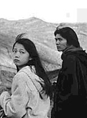
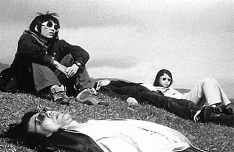
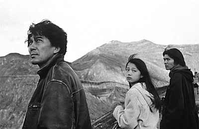
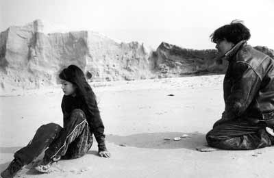
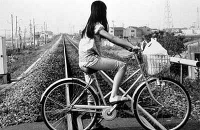

| |
So, 10. September 2006 - KIZ
Eureka (Jap 1999)

An einem heißen Sommermorgen wird auf der Insel Kyushu, im Südwesten Japans, ein öffentlicher Bus von einem verzweifelten Amokläufer entführt. Nur ein Mann und zwei Schulkinder überleben das Blutbad: der Fahrer Makoto, das Mädchen Kozue und ihr älterer Bruder Naoki. Makoto kann die Last des Traumas nicht ertragen und verläßt die Kleinstadt. Zwei Jahre lang verschwindet er spurlos, bis er eines Tages ohne eine Erklärung bei der Familie seines Bruders auftaucht. Die Kinder scheinen noch stärker traumatisiert: Nach der Busentführung verlässt die Mutter die Familie, wenige Zeit später stirbt der Vater. Die Kinder ziehen sich in beharrliches Schweigen zurück. Nachdem Makoto fälschlicherweise als Täter in einer Serie von mysteriösen Frauenmorden verdächtigt wird, zieht er zu den beiden verwaisten Kindern. Zu den Dreien gesellt sich der Cousin der Kinder, Akihiko, der die Semesterferien nutzt, um ihnen einen Besuch abzustatten. Makoto erkennt schließlich, dass ein Ortswechsel die erstarrte und verzweifelte Situation retten kann: er kauft einen alten Bus und bricht am Ort des Hijackings gemeinsam mit den Kindern und Akihiko zu einer Reise auf.
 Ein Meilenstein der modernen Filmgeschichte. Am ehesten noch mit Andrei Tarkowskijs "Stalker" vergleichbar. Allerdings mit fast 4 Stunden Länge hat ihn kein Verleiher ins Programm genommen.
Eureka ist ein wortkarger Film, der Stille, der Geduld, der unerklärten Ereignisse, Verschiebungen, Beziehungen. Die Tonspur ist fast wichtiger als das, was an Worten fällt, bedrohliche, mehr und weniger verstärkte Geräusche: etwa, einmal, das Schwingen eines Golfschlägers, das an das Trauma rührt. Aoyama zeigt das, führt es vor in der bloßen Kombination von Bildern und Tonspur. Auf lange, fast ereignislose Szenen, die trotz der sorgfältigen Komposition des Einzelbilds in vergleichsweise flüssiger Decoupage aufgelöst werden, folgen unerklärte Schnitte, Sprünge, die die zeitliche, wenigstens zunächst auch die räumliche Orientierung schwer machen. Mehr... - Ekkehard Knörer
"A dramatically minimalist, emotionally rich saga." - Variety
"Not simply one of a kind; it is a near-miracle." - Joe McGovern, MATINEE MAGAZINE
"To watch this film, in short, can be a transforming experience." - Kevin Thomas, LOS ANGELES TIMES
"It makes one believe that intimate human connections are possible, that empathy is worth struggling for." - Amy Taubin, VILLAGE VOICE

Festivalpreise:
Cannes 2000 - Kritikerpreis und Preis der Ökonomischen Jury
Singapure 2001 - Bester asiatischer Film
Viennale 2001
Jap 1999, B+R: Ayoama Shinji, D:Yakusho Koji, Miyazaki Aoi.
217min (3 1/2 Stunden!), jap.meUT
Sonntagsmatineé 12:00 Uhr, KIZ im Augarten Graz
- [imdb] 7.7/10 (725 votes)
- [rottentomatoes]
- spacemovie Newsletter
- [midnighteye}
- [Interview with the director]